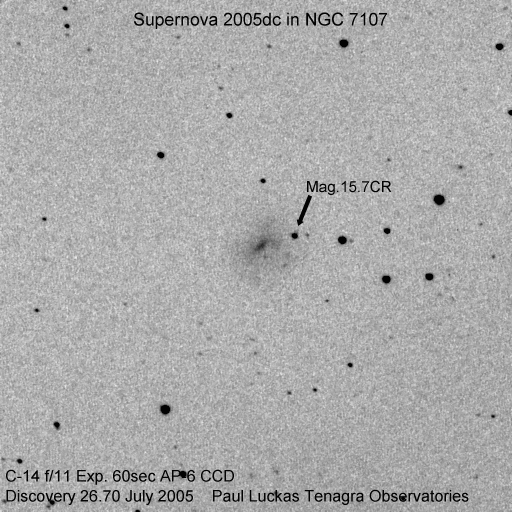

Tenagra Western Australia discovers its first supernova during the telescope's commissioning and testing phase - a great surprise after all the hard work.
(click on image for larger version)

Circular No. 8575 Central Bureau for Astronomical Telegrams INTERNATIONAL ASTRONOMICAL UNION Mailstop 18, Smithsonian Astrophysical Observatory, Cambridge, MA 02138, U.S.A. IAUSUBS@CFA.HARVARD.EDU or FAX 617-495-7231 (subscriptions) CBAT@CFA.HARVARD.EDU (science) URL http://cfa-www.harvard.edu/iau/cbat.html ISSN 0081-0304 Phone 617-495-7440/7244/7444 (for emergency use only)
SUPERNOVA 2005dc IN NGC 7107 P. Luckas, Perth, W. Australia; O. Trondal, Oslo, Norway; and M. Schwartz, Patagonia, AZ, report the discovery of an apparent supernova (mag 15.7) on an unfiltered CCD frames taken with a 0.35-m Tenagra telescope at Perth on July 26.70 and 27.62 UT in the course of the Tenagra Observatory Supernova Search. SN 2005dc is located at R.A. = 21h42m22s.66, Decl. = -44o47'21".2 (equinox 2000.0), which is 41".1 west and 9".6 north of NGC 7107 (the galaxy center having position end figures 26s.50, 30".8). Nothing was visible at the position of 2005dc on an image taken by Luckas on July 5.61 (limiting magnitude about 18.5).
CBET 109 SUPERNOVA 2005dc IN NGC 7107 D. C. Leonard and A. Gal-Yam, California Institute of Technology, report that a preliminarily reduced CCD spectrum (range 580-900 nm) of SN 2005dc (IAUC 8575), obtained on July 28 UT with the Keck I 10-m telescope (+ LRISp), shows it to be a type-Ia supernova, probably within a week of maximum light. The supernova expansion velocity, derived from the minimum of Si II (rest 635.5 nm), and adopting the NED recession velocity of 2204 km/s for the host galaxy (from Koribalski et al. 2004, A.J. 128, 16) is about 12500 km/s.